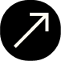

<section class="project-wrapper">
    <div class="project-count syne" [ngClass]="{'reverse-order': isReverse}">
        <p>{{ formatNumber(currentProject) }}/{{ formatNumber(totalProjects) }}</p>
    </div>
    <div class="project-overview" [ngClass]="{'reverse-order': isReverse}">
        <div class="img-container">
            
            <div class="img-border"></div>
            
        </div>
        <div class="project-info syne">
            <h3>{{ getName() }}</h3>
            <p class="overpass">{{ getDevTools() }}</p>
            <span class="overpass">{{ getDescription() }}</span>
            <div class="project-btn overpass">
                <a href="#">Test</a>
                <a href="{{ getLink() }}" target="_blank">Github</a>
            </div>
        </div>
    </div>
</section>